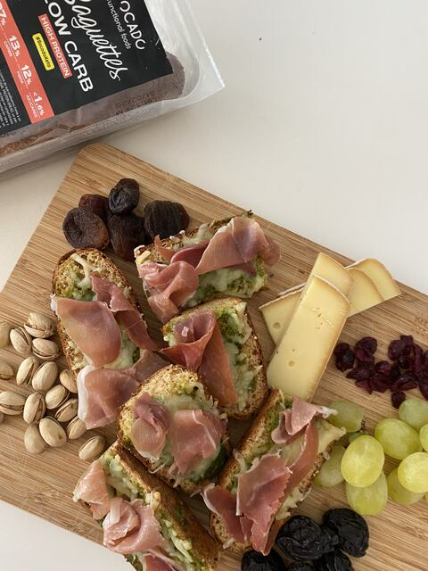

Receta · Almuerzo · 25 min aprox.
Bruschettas de Pesto, Mozzarella y Jamón Serrano
Bruschettas de Pesto, Mozzarella y Jamón Serrano es una receta fácil con Baguettes Low Carb, lista en unos 25 minutos. Lleva 1 baguette low carb, aceite de oliva y 2 cucharadas de pesto, y es perfecta para un almuerzo, una cena ligera o para llevar. Baguettes Low Carb aporta 27 g de proteína por cada 100 g.
5 ingredientes5 pasos25 min aprox.
 Hecha conBaguettes Low Carb220 g · 2 uds de 110 gVer producto
Hecha conBaguettes Low Carb220 g · 2 uds de 110 gVer productoIngredientes
- 1 baguette low carb
- Aceite de oliva
- 2 cucharadas de pesto
- 2 puñados de queso mozzarella rallado
- Jamón serrano
Información nutricionalReceta con solo 4 ingredientes
Preparación
- 01Cortar la baguette en rebanadas
- 02Untar con pesto y aceite de oliva
- 03Cubrir con mozzarella rallada y jamón serrano
- 04Hornear hasta gratinar
- 05Servir con uvas, pasas y frutos secos